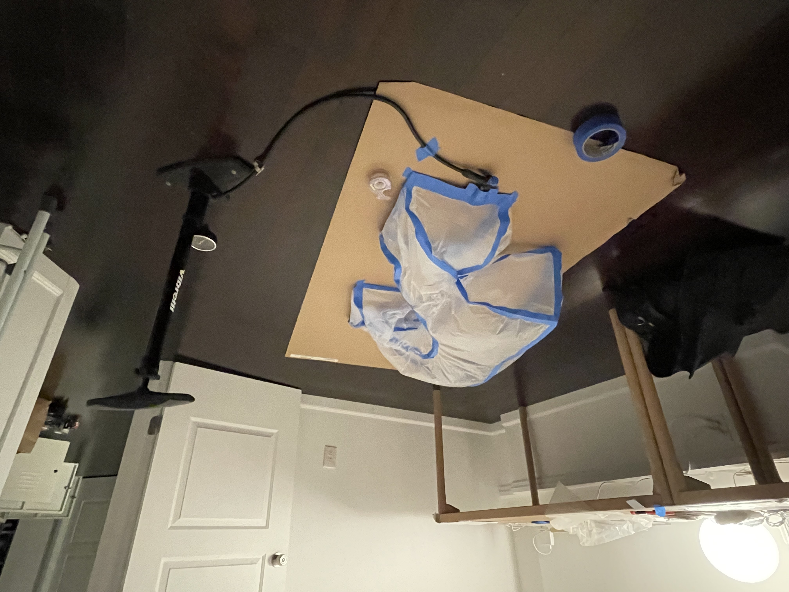
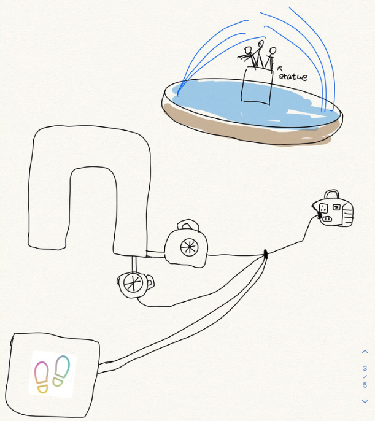

Instruction Sets for Strangers Prototype
Peilin Chen & Franco Chen
Our intial prototype models were made using the sam materials we envisioned for our final prototype. These materials consisted of painter's plastic and painter's tape.
The two determining factors on the choice of materials was the tape's ability to hold the seams, while being forgiving if we mistaped, and the plastic's ability to be
lightweight, yet strong.
The prototype shown below features dimensions of 3ft x 3ft x 1ft, and is roughtly a third of the size of our imagined final prototype.


We realized we had a problem when we tried to inflate the arch. While the volume was relatively small, we weren't able to inflate the object with a bike pump. This resulted in approaching other techniques for pumping, including one of a bellow, which we produced by hand. While the bellow better than the pump, the inadequate materials we had meant we weren't able to achieve the results we expected. This prompted us to investigate other methods of pumping.

The video below demonstrates inflating the arch with a hair dryer, allowing for us to achieve a full inflation in 45 seconds. It took about 30 seconds for the arch to
deflate to the half-mast position below.
The limitations of a manual pump versus the scale we were imagining meant we had to resort to electrical means. We imagine having several electric pumps that can be engaged
by stepping on a button. While the nature of the interaction changes from pumping to stepping, we saw this as an equally accessible and understandable interface.
When it came to testing on site, we needed to understand three things. The first, was the general interest in the idea of an inflatable arch. Would people go up to it?
How do people interact with it? Second, we wanted to understand how people will interact with a button on the ground. Is this soemthing someone will instinctively step on?
We didn't have electric pumps at the time of this prototype, so we hoped the draw of stepping on a button is enough to understand someone's perception of the interaction
although the button physically did nothing. Third, the more technical inquiry, was to understand how the arch will fare on site. Would it blow away or get torn by brushing
the ground too many times?



What we learned from this testing was far from what we expected. The arch was a good for the environment, but it was forgettable. The button didn't draw much inquiry,
and people glanced, but never approached. Furthermore, the experience and "payoff" we expected for the users wasn't able to be captured at this scale. We had imagined
for picture takers to take their photo through it, but that wasn't afforded.
Moving forward, we knew we had to increase the size and we had to increase the rate of air exchange. In addition, we had to conceptualize the button further and come up
with one that's meaningful to the users.
Challenges remain, however. The initial questions still arise. Will users interact with the button? What will they do after the arch is inflated? Will the arch inflate
too slowly? Will it deflate too slowly? Will it be taken away by the wind? Will our electric pumps fail? How do we get electricity?